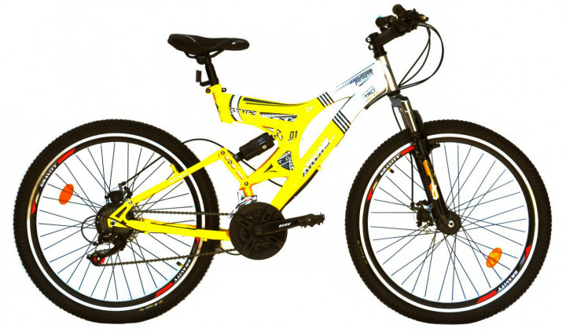
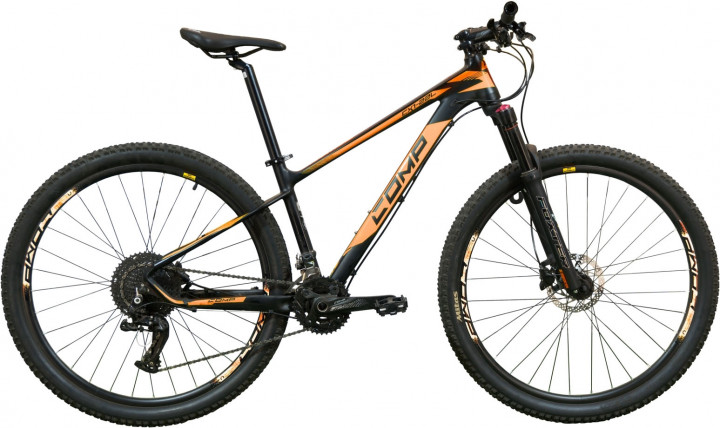
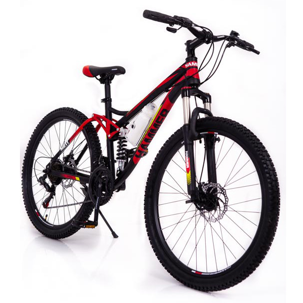
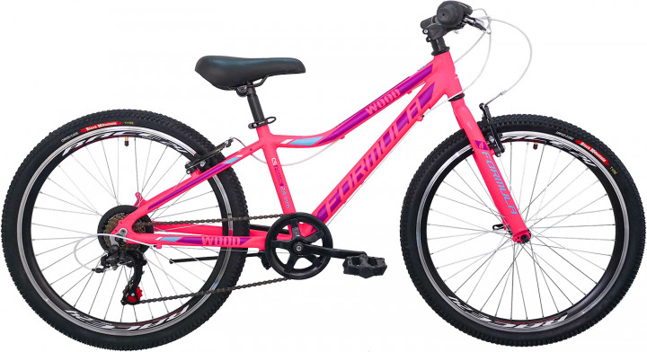
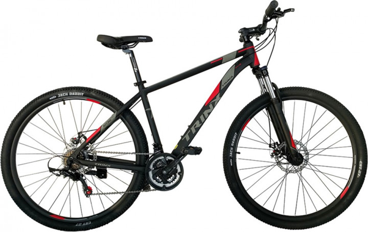
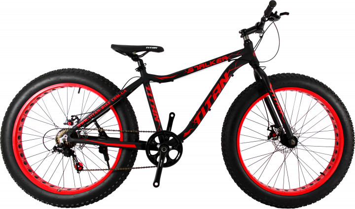

ARDIS
ціна 5620₴
КупитиОпис
Велосипед Ardis Infinity — надійна та потужна модель двопідвісного типу для перегінників-початківців.Ви оціните яскравий і футуристичний дизайн цієї моделі, який відразу ж привертає увагу., Рама представлена фірмовою конструкцією зі сталі Hi Tensile,
відомої своєю міцністю і стійкістю до експлуатації
COMP
ціна 13500₴
КупитиОпис
COMP Harvard Велосипед зібраний на алюмінієвій рамі з легкого, але дуже міцного сплаву 6061. На ньому встановлена суперсучасна трансмісія 1х11, яка дозволить заїхати на будь-яку гірку, а також тримати хорошу швидкість на рівній поверхні
HAMMER
ціна 6350₴
КупитиОпис
Гірський велосипед на амортизації HAMMER ACTIVE 26-S211 Shimano Збірка 85% Нова допрацьована модель класичного добре нам вже знайомого і відмінно зарекомендував себе за довгі роки на ринку велосипеда Hammer
FORMULA
ціна 4600₴
КупитиОпис
Самий продаваний в Україні велосипед для молодших підлітків на алюмінієвій раме- Wood від марки Formula. Бюджетний, простий, надійний і скоєно неубіваемий байк на 24-дюймових колесах. З комплектації в цій моделі залишили тільки найнеобхідніше: гальма V-break і 6-швидкісна трансмісія.
TRINX
ціна 8630₴
КупитиОпис
Гірський найнер для твоїх яскравих пригод! Одноподвесний гірський велосипед, на алюмінієвій рамі і 29 "колесах. Володіє прекрасним накатом і відмінними швидкісними характеристиками.Трансмісія Shimano на 21 швидкість, дозволить легко долати великі відстані з затяжними спусками і підйомами.
TITAN
ціна 6569₴
КупитиОпис
Titan Stalker 26 "має надійні дискові гальма, на цьому велосипеді встановлені великі колеса з товстими покришками, які при досить низькому тиску здатні поглинати нерівності дороги, що робить їзду набагато комфортніше і істотно підвищує прохідність.